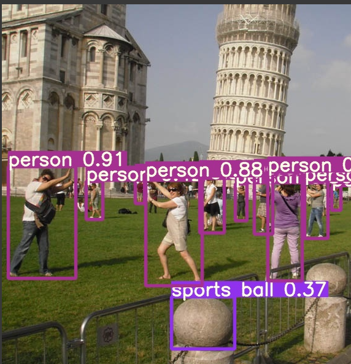
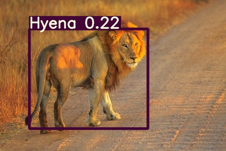

YOLOv5
Implementing YOLO in a Colab Notebook
All of my work with YOLO is built upon this YOLOv5 tutorial notebook. You can find the github repository that this notebook is contained in here: YOLOv5 Repository.
This notebook is a Pytorch implementation of the algorithm and it was very useful for me and allowed me to build upon it to customise it for my own use. Moreover, the Fast.ai framework is built upon Pytorch and so future integration should be more acheiveable.
You can find my customised notebook in my github repository here.
Customising the Notebook
Setup
- I created a copy of the tutorial notebook.
- I then mounted my Google Drive to the notebook for easy access to stored data.
- I added in some installation commands for fast.ai because my original plan was to use the fast.ai.widgets library for user input of an image.
- I then pasted in the cell for installing the YOLOv5 github repository from the tutorial notebook.
- I also copied the cell for downloading the COCO dataset from the tutorial notebook. This was for testing purposes to see if I could just get the training command to work.
- After running train.py on the model using COCO, I tried running an inference on a custom image I got from the internet that contained classes within COCO.
- Before:
- After:
 - After making inferences on some more custom images I thought to compile my own dataset to see how that could be acheived.
- At first I attempted looking for large datasets to use and found one that I liked, however I didn't realise that datasets are in different formats for different use cases. I wasted a lot of time uploading the dataset to google drive and unsurprisingly it did not work when I tried to train on it.
- Therefore I recommend not attempting this because datasets in the correct format are very rare to find.
- Then I attempted to collate my own small dataset for a proof of concept. (To test my ability to train a custom dataset.)
- I discovered the use of .yaml files and the proper file structure of the dataset for YOLOv5. (I studied the already-present COCO dataset.)
- In order to run the train command you need a .yaml file which stores the locations of the image folders within your directory.
- The .yaml file will also specify both the number of classes within your dataset and the names of those classes.
- I created my base .yaml file as follows (# precedes a comment):
train: #path
I left some attributes blank before I figured out what my dataset would include.
val: #path
nc:3 #number of classes
names = ["","",""]
- I then created a dataset for 3 different types of african animal just by downloading images of the animals.
- I found out about the appropriate YOLO format here and used the tool the creator mentioned. This tool is very useful because unlike some other popular image labelling tools, it allows you to export your bounding box annotations in the yolo format, which you then store in the labels folder.
- Directory Structure:
- Dataset/
- Images/
- Train/
- Val/
- Labels
- Train/
- Val/
- For each folder of images(train, val) I found it easiest to label one folder at a time and then when exporting those labels, store them in the associated labels folder.
- Upload both your dataset and your .yaml file to your google drive.
- Run the train command:
!python train.py --img 640 --batch 4 --epochs 100 --data /content/drive/MyDrive/myData.yaml --weights yolov5s.pt --cache
I used 100 epochs for the first time training because I didn't want to overfit.
- Note: remember to use the weights produced from the training operation.
You will find the path for these weights at the end of the training dialogue:Optimizer stripped from runs/train/exp2/weights/last.pt, 14.4MB
-
Run the detect command on an image(I recommend uploading it to google drive):
!python detect.py --weights /content/yolov5/runs/train/exp2/weights/last.pt --img 640 --conf 0.1 --source /content/drive/MyDrive/yolov5_data/imgs/test_images/lion_test.jpg
This is the inference I got with an image from the internet:
 - It's clear that my model will need more training for it to classify accurately.